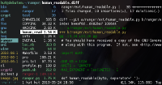
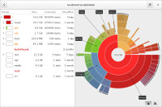

Tech open source
Most of this page is about open source software. A lot commercial software is easy to use and works straight out of the box. However you are less in control, there may be unwanted hidden features, and you are constantly required to buy new hardware. Many of the packages
listed are fast and light on system resources but can take time to learn how to use.
- LibrePlanet wiki about free software community and campaigns
GNU/linux
- Arch Linux rolling release, meaning the lastest packages are always available (at the cost of less stability). supportive user community, and huge user software repository (AUR). Very configurable on installation. Great package documentation on the wiki which you will find usefull whichever distribution you use. The entire wiki can be downloaded for reading offline.
- Debian 'the universal operating system'. Many different computer architechtures are supported, a big, supportive user community, a huge pre-compiled software repository, and different builds for stable, unstable and testing. Debian is purist about free software. Only completely non-proprietory packages are included in the official repository. Of course it is very easy to also install non-free packages, and a bundle of non-free extras (such as codecs for mp3, etc) can be downloaded. Many of the very popular linux distributions (eg. Ubuntu) are based on debian. The default desktop environment, currently gnome3, is in my opinion annoying, but it is easy to change it.
- DistroWatch.com website with a lot of information about the
different linux distributions.
- UNetbootin Software to create
bootable usb linux system (useful for installing linux). Runs also on windows and mac.
- The Linux Documentation Project
window managers
- i3 - great tiling window manager. tiling window managers allow more keyboard rather than mouse control. If you find yourself rarly using the mouse and using keyboard shortcuts to switch windows (eg: Alt+Tab) its time to switch to a tiliing window manager. once you get used to it is difficult to imagine ever going back to floating windows. i3 has good support for multi-monitor systems. Configuring i3 i3status: Generates status bar to use with i3bar, dzen2 or xmobar
- [dwm] another great tiling window manager. very lightweight.
- Openbox a basic floating window manager - you can
install additional features yourself, making it very customisable
but not working well straight out of the box. You will probably need
to install tools for power mangement, networking, managing
displays, etc.
- urukrama's Openbox keybindings
- awesome tiling window manager -
meaning windows are arranged with the keyboard into tiles. Good for
if you dont like to use the mouse and also good for making the most
of display space.
- Comparison of Tiling Window Managers - ArchWiki
zsh
FASD
FASD makes finding files and directories with the command line so much easier! You need this!
It comes with some aliases, for example, instead of cd you can use z followed part of the name of the path
you want to move to. FASD will guess what you want, using 'frecency' (combined recency and frequency). So whereever you are z D will take you to the most commonly/recently used directory with D, which might be ~/Downloads.
v xxx will open vim with frequently/recently used file containing xxx.o xxx will open the default application for the file. cp \f xxx` /tmp` will copy file containing xxx to /tmp- The best thing about it is you can also use it with tab completion. Try just typing
z <tab> in your terminal, you see a list of places you've frecently been.
- tmux terminal multiplexer - another great tool for mouse free control of terminal windows and much more. Very configurable. Many people love it. Personally I prefer to organise terminal windows with my window manager.
- URxvt - unicode terminal emulator. Highly configurable, well maintained and supported.
-
terminator terminal emulator with many features, including tabs and split windows. I used this until I switched to a tiling window manager. Some useful keys in terminator:
Ctrl + Shift + O Splits terminal hOrizontally.Ctrl + Shift + E Splits terminal vErtically.Ctrl + Shift + Arrows Move parent dragbarAlt + Arrows Move to different terminals.
-
GNU Screen - a great program which can be used for window splitting etc. The nice thing about it is that it will run over ssh. You can also use it to start a process over ssh and then leave it running even after you disconnect from ssh. (very useful)
- commandlinefu.com a website where people post useful (or simply nerdy) command line tricks.
- explain.sh - script to explain a command you dont know what it does (pulls stuff from man pages) eg: 'explain 'ls -l''
-
30 handy bash aliases
-
dotfiles.github.io good explanation of several dotfile repos and tools for managing dotfiles.
- GNU Stow - Manage installation of multiple softwares in the same directory tree - can be useful for automatically creating symlinks to dotfiles.
web
-
vimb lightweight webkit based browser (of which there are many to choose from, inspired by vimprobable, and in my opinion an improvement.
-
vimprobable another lightweight browser with vi style key bindings. uses considerably less CPU than firefox/iceweasel. Also allows tabs to be managed by your window manager. Keybindings Using Vimprobable - jasonwryan.com
- qutebrowser - still relatively lightweight and with vi style bindings, but a bit more feature-rich than vimb.
- VimFx Add-on for Firefox
- vimperator vi style control of
firefox/iceweasel web browser. So you can control the web browser
without using the mouse.
-
Surfraw 'Shell Users' Revolutionary Front Rage Against the Web' - open websites from the commandline. a very handy program. You can alias sr="surfraw" and do sr wikipedia chard from the command line to jump to wikipedia article about chard. See the list of elvi (website search scripts for surfraw).
-
GNUzilla and IceCat firefox/iceweasel alternative 100% free software, no proprietory plugins recommmended
- conky system monitor
- yadr yet another dotfile repo. a
bundle of configurations for vim, zsh, ruby and git. The idea is
that rather than spending a lot of time configuring software, a
collabourative effort is made to bring together sane configurations
and plugins etc.
- yaourt - wrapper for arch linux's pacman - install packages from arch user repository (AUR) easily. AUR 'helpers' like yaourt have been criticised for encouraging users to install packages without properly checking pkgbuilds, which raises security issues (maliscious software could be unintentionally installed). However some people think that the convenience of using the helpers outweighs the security risks. You can make up your own mind.
- aap makes it easy to download, build and install software
- calmar.ws tips and info on linux,vim, vimperator, awesome, other stuff
- refcards.com free quick reference cards
- fcron.free.fr apparently good for running cron jobs on a system which is not always switched on. (eg.laptop)
- OpenVZ container based vitualisation for linux.
vim text editor
Vim has a steep learning curve. But if you edit a lot of text files it
is definately worth learning. The keybindings in vim are used in a lot of other nerdy programs, and vim is installed on a lot of different systems which makes it a very useful thing to know, even if you just know the very basics. It has really a lot of features and plugins available.
file management
- ranger
terminal based file manager with vi style keybindings and many
features including 'rifle' file opener, previewing, tabs,
bookmarks, tagging. ranger is not a two pane file manager like mc or
vifm, but uses 'miller columns' showing the directory hierarchy
(similar to mac os 'finder'). The centre column is active, the left
column the higher level directory, and the right column shows either
a deeper directory or file information or preview. Can preview pdf with pdftotext. Can preview images with ascii, or if your terminal emulation permits it by displaying the image.
- mc Midnight Commander - old school 2 pane terminal based file manager (norton commander style)
- vifm vi file manager. Two pane and with vi style keybindings
- xfe X File Explorer - light file
manager for x-windows. Can have 2 pane and directory tree. Some
norton commmander style keybindings.
- gnome commander File manager for gnome,
norton commander style.
- gentoo Light, fast 2 pane file
manager
- SpaceFM multi-panel tabbed
file and desktop manager
- Baobab
gnome disk usage analyser - graphical representation of disk usage -
great for when you are trying to free up space
- ncdu - NCurses Disk Usage, a simple,
fast program for analysing disk usage.
- sshfs mount a remote
filesystem via ssh
email
- mu (maildir-utils) program
for searching email stored in maildir format. To index your emails,
mu index --maildir=mymail You can do this for
several mail directories, and you may want to set it up as a cron job to
periodically index your new emails. mu find cabbage will show emails
about cabbage. You can also bind mu find to a key in mutt, and have
the results stored as a temporary maildir, which can accessed in mutt:
(from mutt wiki)
first macro does the search according to user query, second macro jumps to results list
macro index <F8> "<shell-escape>rm -rf ~/.mu/results; mu-find -o l -l ~/.mu/results " "mu-find"
macro index <F9> "<change-folder-readonly>~/.mu/results\n" "display mu-find results"
- Mailman GNU
Mailing list manager
- notmuch another great program for searching email
mutt email client
Its not for everyone, it takes a lot of configuring but once you have got it right it can work well and save time.
non-commercial email providers
These email providers are non-commercial groups which take security and
privacy seriously. Please add more
graphics
- gimp -the GNU image manipulation program - a gui graphics editor (like adobe photoshop)
- inkscape gui vector graphics editor (like
corel draw)
-
feh a fast and light image viewer. you can go to your photos folder and type feh -Frz to randomly see photos in all subdirectories. can also be used to display wallpaper. keybindings:
left/right - previous/next image
up/down - zoom
/ - zoom to fit window
d - toggle display filenames
Ctrl + delete - delete file
m - menu
Feh command line switches:
F - fullscreen and scale large images to fit screen (often what you want)
r - recursive (enter directories)
z - randomise file list
A - customisable action eg: feh -A "cp %n ~/pics", then press 0 to do the action. very useful!
-
imagemagick powerfull command line tools for converting, editing and composing images. Good for batch image processing. very useful for web development. use 'convert' for a many image processing tasks, including resizing and changing format. mogrify is the same as convert but modifies the input file directly, rather than producing a new output file. very useful, but use with caution.
- graphicsmagick a fork of imagemagick - apparently more efficient.
- G'MIC GREYC's Magic for Image Computing - an image processing framework. Commandline tools, Gimp plugin and C++ library.
document and book viewers
-
MuPDF - a superfast, lightweight pdf viewer with some vi style keybindings.
f = toglle fullscreen mode
W, H - zoom page to exactly fit width or height of window
<, > - skip back or forwards 10 pages
-
apvlv - another pdf viewer, vi style.
- calibre - ebook library manager
- FBReader reader for epub etc
electronic books
- gen.lib.rus.ec library genesis. Huge
book collection. Particularly a lot of science type stuff. Based in
russia, with many mirror sites, it is also possible to set up your
own mirror or offline repository, the SQL database dump can
be downloaded. Some ISPs are beginning to block library genesis,
which means you need to find a mirror which is not blocked, or
access it through TOR or a VPN.
- Project Gutenberg One of the oldest
free ebook collections on the net. 46,000 titles.
- internet archive also hosts many books.
- http://clockwise3rldkgu.onion/
clockwise libraries - a good ebook library online available
through TOR.
- magsDB magazines database (russian site)
- resrc.io list of free programming language
resources
- DIY Book Scanning a community devoted to DIY/low cost book scanning hardware and software
- Book scanning wikipedia article
- openlibrary.org ebooks
backup/archiving/filesharing
-
rsync - a powerful backup/file
copying tool. rsync only copies differences in the files, to
minimise the amount of data being transfered. This means it responds
well to transfers which are interupted and restarted. Commonly used
options:
rsync dir1/ dir2
Note the slash, to put the contents of dir1 into dir2 (often this is what you want)
- -a Archive mode - recursive, preserve times, permissions etc (often what you want)
- -v Verbose
- --progress display progress
- -n Dry run - dont actually do it, just show what would happen. this is very useful for experimenting with features before running a big backup or potentially doing something very stupid
- --delete Delete files in the destination directory that were not in the source directory.
- -u Update - skip files that are newer on the reciever. This can be run in both directions to syncronise
- Grsync - rsync graphical frontend for Linux
- unison file syncroniser. Unlike rsync, unison ensures both filesystems have the newest version of a file. tutorial on setting up unison
- syncthing open source 'cloud storage' software. Similar to the commercial software Resilio Sync.
- diff -qr source destination show the differences between directories. Arguments '-qr' means brief and recursive.
- comm -3 <(ls ~/dir-new/) <(ls ~/dir) compare two directories
Find duplicate files:
find -not -empty -type f -printf "%s\n" | sort -rn | uniq -d | xargs -I{} -n1 find -type f -size {}c -print0 | xargs -0 md5sum | sort | uniq -w32 --all-repeated=separate
Find and delete duplicate files:
find -not -empty -type f -printf "%s\n" | sort -rn | uniq -d | xargs -I{} -n1 find -type f -size {}c -print0 | xargs -0 md5sum | sort | uniq -w32 --all-repeated=separate | cut -f3-100 -d ' ' | tr '\n.' '\t.' | sed 's/\t\t/\n/g' | cut -f2-100 | tr '\t' '\n' | perl -i -pe 's/([ (){}-])/\\$1/g' | perl -i -pe 's/'\''/\\'\''/g' | xargs -pr rm -v
network attached storage (NAS)
booklet printing on linux
some tools, for example, for reordering pages of an a4 documents to make an a5 booklet or zine.
pdf2ps # convert a pdf document to postscript
psbook in.ps out.ps # reorder the pages to make a book,
psnup -s1 -2 book.ps booklet.ps # shrink to 2 pages on each A4 side
ps2pdf in.ps out.pdf # convert it back to a pdf
If you dont have a duplex printer probably you want to print the even pages, put them in the paper drawer (the right way around! very confusing!) then print the odd pages
lpr -P myprinter -o page-set=even -#1 infile.pdf # print the even pages
lpr -P myprinter -o page-set=odd -#1 infile.pdf # print the odd pages
encryption
- cryptoparty handbook plenty of information
-
gpg Gnu Privacy Guard. Tool for encrypting files and email. Most simple usage - gpg encryption of a single file:
gpg -c file
This prompts for a password and gives file.gpg. To decypt:
gpg -d file.gpg >file
-
Disk encryption article on ArchWiki a good explanation of disk encryption and a comparison of the methods.
- truecrypt
- evopedia - offline wikipedia reader.
- kiwix wikipedia offline reader - read
wikipedia when not connected to internet. The english wikipedia
(text only, no images, user pages or discussion pages) compresses to
about 8gb! You will need to download this data in 'zim' format,
available as a torrent. list of wikipedias. Currently not supported on debian.
- openstreetmap collaborative
mapping project. it is also possible to download openstreetmap (even
the whole planet) for offline viewing using a software called
navit (which i still havent
succussfully used), other software projects are Gosmore, Emerillon
and Marble. It seems that rendering map tiles from a downloaded map
takes a lot of computing and rendering software tends to be designed
for servers. I have not found downloadable pre-rendered tiles for
easy, fast offline viewing. Any ideas? It would be great to have
quickly accessible offline maps.
- OfflineIMAP software for syncronising
imap mailboxes. It is useful for unreliable or slow internet
connections or when you want to read email offline.
- hitchwiki.org the excellent hitchhiking website can also be downloaded to view
offline hitchwiki while offline. The
database is downloaded in XML format which can be viewed with
various kinds of dictionary viewing software.
offline dictionary for linux
- dict great dictionary software with many dictionaries available.
- goldendict uses freedict dictionaries.
- Ding A very good German-English dictionary lookup program
filesharing
torrent tracker sites
- t411 good torrent tracker (french) requires registration and has advertising but some really good stuff on there. 'Telecharger'='Download'
- rutracker.org good torrent tracker (russian) also requires registration.
- myananamouse.net torrent site
specialising in english ebooks and audiobooks. it is a private site
with a complicated regestration process and many rules, but there is
a lot of books on there.
- tracker2.postman.i2p i2p torrent
tracker (you must be running i2p to access)
- rarbg.to
audio software
- hydrogen audio forums about audio
software etc
- rockbox open source firmware for music
players, eg. ipod. Very useful if the original firmware wont play
certain formats, or has restrictions on copying music off
the player. Can run on Sansa clip (a highly recommended mp3 player).
- mpd music
player daemon. music playing software designed to be run over
a network. But it is also very good when client and daemon are running on the same computer. If there is a network attached computer connected to an amplifier and running mpd, other computers on the network can
control the player by using mpd client software (of which there are
many to choose from, i use ncmpcpp).
Can run on raspberry pi. The database is very fast to update
and search. I previously always avoided database driven players because of speed, bloated software, and inability to access my catagoried directory structure where I know where to find things. Most mpd clients allow browsing by directory structure as well as database, and its playlist management system is good. The really great thing is, you can decide to change client software without setting up the database again. Also easy to set up status viewing in a system monitor or keybindings in your window manager, so you can control the player whilst using other software. A must for big music collections.
- cmus curses based music player
software (linux, console based). with playlists, play queue,
filtering, vi style search and command mode, dynamic keybindings.
- moc another, simpler, curses based player.
moc has two panels, with a similar look to midnight commander. On
the left panel is a file browser and the right is a playlist.
- randomplay even
simpler console player. plays random tracks.
- DeaDBeeF GUI music player. Lightweight, extendable with plugins, and has tabbed playlists and a design editor similar to foobar2000 (a very good windows music player).
- beets music collection organising tool. Useful for tagging and organising a large collection.
- gmusicbrowser jukebox software
designed for a large music collection
- Linux multimedia studio (LMMS) free music production software, with VST compatibility.
- sox command line sound tool. can be used as simple synthesiser, and to convert audio formats.
- Mumble voice chat software. Mumble was originally developed for chat whilst gaming and is now also popular for conferencing etc.
- audacity free audio editor and recorder.
- Mixxx Open source DJ software. For
monitoring (listening to the next track to be played on
the headphones) it is best to have a soundcard with
multiple outputs. Many soundcards have surround sound, meaning you
can use the 'front' channels for output and the 'rear' channels
for monitoring. A cheaper way to do it would be to use two
soundcards, for example your computer's on-board card for main
output and a cheap USB card for monitoring. An even cheaper way
might be to use the left channel for ouput and the right channel
for monitoring. Mixxx also works with various types of midi
hardware, so you can control pitch, cueing, equalisers and other
stuff with real twiddley knobs and sliders.
- xwax: Digital vinyl on Linux Open source software for DJing using time-coded vinyl (like Serato scratch, etc). The playback of a digital track is controlled using normal record decks with special records. Like having every record you ever wished for. Well of course really having the records would be better, but its a lot of fun. xwax can work together with Mixxx.
- tweakheadz has guides on making music with software and hardware
- mps-youtube terminal based youtube player and downloader. very good for finding and downloading music fast, without the clutter of the youtube website.
- ccmixter.org online community for musicians, hosting a lot of creative commons lisenced audio.
- soulseek qt music sharing network. nicotine is a good soulseek client written in python
- vitunes - a curses media indexer and player
to take 30 random mp3s and put them in a directory (i use this to
randomly choose some of my music to put onto my mp3 player):
find -name "*.mp3" | sort --random-sort | head -n 30 | xargs -n 1 -i^Cd '\n' cp {} /media/mp3player/randomtunes
audio hardware
- diyaudio.com forums about diy audio
hardware projects
- tweakheadz has guides on making music
with software and hardware
- vintagesynth.com online resource for
vintage synthesisers and other audio hardware
- Standuino DIY open
source audio hardware
- speakerplans.com designs for speaker
enclosures
- horn response - speaker enclosure design software. can use with
abaca? audio abacus
usenet
- tin text-based usenet newsreader software
- eternal september Free text only
usenet provider (registration required)
- aioe free text only usenet provider (no
registration required)
other / uncategorised
Many of these links need to be (or already have been) put elsewhere on
the wiki
Unsorted links: